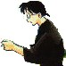

I Personaggi - Secondari, ma non troppo!
|
I Personaggi - Secondari, ma non troppo! |
In questo paragrafo vengono presi in esame quei personaggi che sono in apparenza secondari, ma si sono ritagliati un loro spazio non indifferente all'interno di tutta la narrazione diventando, in certi casi, addirittura i protagonisti assoluti di alcune situazioni (come Ryoga e Ukyo, per esempio).
| Dott. Tofu Ono |  |
Il chiroterapeuta della storia è un grande esperto di medicina delle arti marziali, almeno quando non è fuori di sé! Infatti, ogni volta che vede Kasumi o la sente soltanto nominare, esce completamente fuori di testa. I sintomi della sua follia sono: appannamento degli occhiali, sbagliare cose elementari come le porte delle stanze o il verso della cornetta del telefono, e il cominciare a comportarsi come un perfetto idiota (ad esempio ballare in giardino abbracciato al suo scheletro "Betty-chan") e così via; quando il Dottore è in questo stato, diventa un autentico pericolo per sé stesso e per i suoi pazienti. Ovviamente tutti quanti sanno del suo amore per Kasumi, tranne la diretta interessata e lui!
All'inizio della serie, vediamo che anche Akane è segretamente innamorata
di Tofu, soffrendo del fatto che questi invece ama Kasumi. Il motivo per cui
all'inizio della serie Akane porta i capelli lunghi, è proprio per "spirito
d'emulazione" verso sua sorella, per cercare di essere più femminile
e piacere al Dottore: nel corso della serie, comunque, questo amore sembra sparire
progressivamente per essere rimpiazzato da quello verso Ranma. A volte Tofu
fa anche da consigliere per Akane e Ranma.
Genma è riuscito a farsi assumere part-time nello studio del Dottore
come aiutante tuttofare (notare che lui solitamente lavora lì sotto forma
di panda... e nessuno sembra considerare strana questa cosa!!).
Apparizione: Episodio 2. Volume 1 parte 3.
Significato del Nome: Tofu significa "Vento dell'Est"
| Hibiki Ryoga |  |
L'eterno disperso, col braccio d'acciaio ed il cuore di vetro (nonché il personaggio più rompiscatole di tutta la serie). Ryoga e Ranma sono rivali sin da quando andavano a scuola insieme da bambini. A quel tempo Ryoga sfidò Ranma ad un combattimento da tenersi in un prato dietro la sua casa ma, mentre vi si dirigeva (doveva solo girare l'angolo di casa sua) si perse e girò in lungo e in largo il Giappone per quattro giorni! Ranma lo aspettò ma, dopo quattro giorni di inutile attesa, tornò a casa e partì col padre per un viaggio di allenamento. Per riscattare l'offesa subita, Ryoga lo seguì fino in Cina dove, una ragazza col codino ed un panda che si inseguivano, lo buttarono nella sorgente Heituenniichuan, cioè quella del "Porcellino Nero Affogato". Il panda dopo averlo buttato in acqua, salvò il "nuovo" porcellino dall'affogamento... ma soltanto per farselo cucinare dalla guida cinese! La guida buttò il porcellino in un pentolone d'acqua bollente dal quale uscì quindi Ryoga che riuscì così a salvarsi dalla bollitura (purtroppo ^__^;).
Ryoga odia con tutte le sue forze Ranma, responsabile della sua maledizione; consapevole della sua colpa, Ranma decide di non rivelare a nessuno il segreto di Ryoga. Akane decide di prendere con sé il porcellino (non conoscendo la sua vera identità) e di chiamarlo "P-Chan". Ryoga si innamora profondamente di Akane (il maledetto >:-] ) anche se è convinto che nessuna ragazza si innamorerà mai di lui a causa della maledizione. Nonostante gli svariati "messaggi" e "segnali" che riceve (soprattutto da parte di Ranma), Akane non si è mai accorta del fatto che P-Chan fosse in realtà Ryoga, e anzi lo difende ogni volta che Ranma cerca di dargli fastidio, perché pensa sia impossibile che un ragazzo sia geloso di un maialino. Possiamo comunque dire che, dopotutto, Ryoga è il migliore amico di Ranma.
Oltre a non sapersi orientare minimamente, Ryoga viene anche ingannato dai più ridicoli travestimenti di Ranma. È comunque estremamente forte ed abile nelle arti marziali e, a volte, distrugge rocce e muri inavvertitamente quando è agitato.
Apparizione: Episodio 7. Volume 2 parte 2.
Significato del Nome: Hibiki significa "Rumore" mentre Ryoga significa "Zanne Buone".
Segni Particolari: possiede dei canini molto accentuati, tipo zanne vere e proprie. Veste con una casacca gialla e dei pantaloni neri, ed ha una fascia sulla testa che gli va a finire sul collo quando è un porcellino.
Armi: scaglia le fasce che ha in testa, un ombrello molto pesante ed usa la sua cintura come una lama.
Alias: quando è un porcellino viene chiamato "P-Chan" da Akane e "Charlotte" da Azusa.
| Happosai |  |
È il vecchio pervertito della situazione! è un uomo anziano ma anche molto molto potente, grandissimo esperto di arti marziali ed è stato il sensei di Genma e Soun i quali lo temono e lo detestano allo stesso tempo. Anni fa egli li allenò duramente, facendoli anche partecipare ai suoi saccheggi di biancheria intima femminile e punendoli quando rimanevano indietro. Alla fine, essi riescono a farlo ubriacare, incatenarlo e chiuderlo dentro un barile, gettare il barile in una caverna sigillandola con la dinamite e con una pietra con delle incisioni Buddhiste sopra. Un giorno Happosai, che tutti ormai credevano morto, riesce a liberarsi e si presenta al dojo Tendo con la pretesa di allenare il suo successore: molto vigliaccamente Genma gli presenta Ranma come suo succesore.
Happosai è un pervertito feticista al 100% (anche di più) e se ne va in giro rubando biancheria intima femminile per la sua grande collezione e palpando ragazze. Le sue perversioni sono anche l'origine della sua forza: se rimane troppo tempo senza toccare un corpo femminile o della biancheria intima la perde. Akane e Ranma-chan sono le ragazze che preferisce.
Apparizione: Nettohen episodio 15. Volume 5 parte 5. (riappare poi nel Nettohen episodio 114. Volume 19 parte 9)
Significato del Nome: "8 tesori insieme"
Armi: una piccola pipa con la quale fa volare via i suoi avversari. La più famosa invece è la devastante e a lungo dimenticata tecnica segreta Happo-dai-karin, che si rivela essere il lanciare delle bombe!
Alias: Obaba lo chiama 'Happy', come si faceva chiamare lui quando aveva 18 anni.
| Kuonji Ukyo |
Circa 10 anni prima, mentre era in giro per il paese ad allenarsi con il padre, Ranma rubava quotidianamete le "okonomiyaki" (una via di mezzo tra una focaccia e un'omelette) dallo "yatai" (chiosco di cibo) del padre di Ukyo, vincendo facilmente le difese di "Ucchan". Comunque era una rivalità amichevole e per gioco e Ukyo faceva dei disegni con le salse sopra le okonomiyaki per Ranma. Un giorno il padre di Ukyo disse a Genma che sua figlia voleva sposare Ranma, ma Genma gli risponde che Ranma ha già una fidanzata. Quando sente questo, il padre di Ukyo, rattristato, si lascia sfuggire il fatto che avrebbe dato a sua figlia lo yatai in dote, così Genma cambia idea e gli promette che avrebbero preso Ukyo con loro. Genma chiede quindi a Ranma di decidere e dirgli chi preferisce tra Ukyo e le okonomiyaki. Ovviamente Ranma, un po' perché era ancora bambino e un po' perché non sospettava minimamente che Ukyo fosse una ragazza, decide per le okonomiyaki, e così Genma e Ranma si prendono lo yatai e scappano via lasciandosi dietro Ukyo. Derisa dalle sue compagne perché abbandonata dal "fidanzato", Ukyo decide che non si sarebbe mai più innamorata di un ragazzo in vita sua e comincia a vestirsi e a vivere da uomo, dedicandosi alle "arti marziali culinarie".
Qualche anno più tardi si presenta come nuovo studente alla scuola Furinkan e sfida Ranma. Dopo un'avvincente duello, Ranma scopre il vero sesso di Ukyo (oltretutto pensando che sia caduta anche lei nella sorgente, cerca di farla tornare uomo con l'acqua calda!). Ukyo invece scopre che Ranma non va molto daccordo con la sua attuale fidanzata "senza fascino". I due fanno pace e Ukyo si innamora di nuovo di Ranma. Nonostante Ukyo adesso sogni di sposare Ranma e cerchi di separarlo da Akane, Ranma la considera invece soltanto come un vecchio amico. I suoi tentativi di prendersi Ranma, sono comunque meno violenti di quelli delle altre pretendenti di Ranma: ad esempio, invece di provare ad uccidere Akane, Ukyo cerca di farla mettere insieme a Ryoga.
Nel frattempo Ukyo ha aperto un negozio di okonomiyaki chiamato "Ucchan" che le permette di essere un'esperta sia di lavori domestici sia in affari, e anche se ora vive per cucinare okonomiyaki, sarebbe disposta a dare tutto via pur di sposare Ranma
Apparizione: Nettohen episodio 23. Volume 9 parte 5.
Significato del Nome: Kuonji significa "tempio eterno" e Ukyo significa "destra di Kyoto"
Segni Particolari: porta sempre con sé una bandolera (come quella dei Carabinieri) carica di piccole palette per frittelle. Porta anche una grossa paletta sulla schiena.
Parlata: parla il dialetto "Kansai" (es. "ya" al posto di "da", "-mahen" al posto di "-masen", "uchi" al posto di "watashi" e usa "ooki ni" per dire "grazie").
Armi: La grossa paletta per frittelle che porta sulla schiena. Inoltre lancia le palette piccole che porta nella bandolera. A volte lancia dei sacchetti di farina esplosivi.
Alias:
| Kurenai Tsubasa |
Era una compagna molto carina di Ukyo alle scuole inferiori alla quale mandava regali e lettere d'amore. Ukyo (che si spacciava ancora per un ragazzo) rispose ad una delle lettere mandandole una foto della sua "fidanzata" Ranma-chan, e così Tsubasa ha sfidato Ranma per vincere Ukyo. Ranma ha provato a rivelare a Tsubasa il vero sesso di Ukyo ma Tsubasa non ne è rimasta molto sorpresa: le piacciono le ragazze e in particolare ogni ragazza che si comporta in modo gentile con lei. Tsubasa è molto abile nei travestimenti e usa camuffarsi in maniera molto bizzarra, per esempio da cassetta delle lettere, da distributore automatico e così via!
A proposito...Tsubasa in realtà è un ragazzo a cui piace vestirsi da ragazza! ^___-
Apparizione: Nettohen episodio 27. Volume 10 parte 9.
Significato del Nome: Kurenai significa "scarlatto" e Tsubasa significa "ali"
<<-RITORNA ALL'INDICE DEI PERSONAGGI
| Grafica, impaginazione e testi sono (c) di Francesco "Nibunnoichi" Giordano e non possono essere usati senza il consenso dell'autore. |